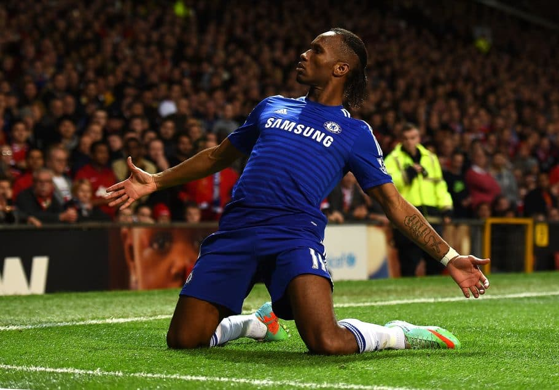
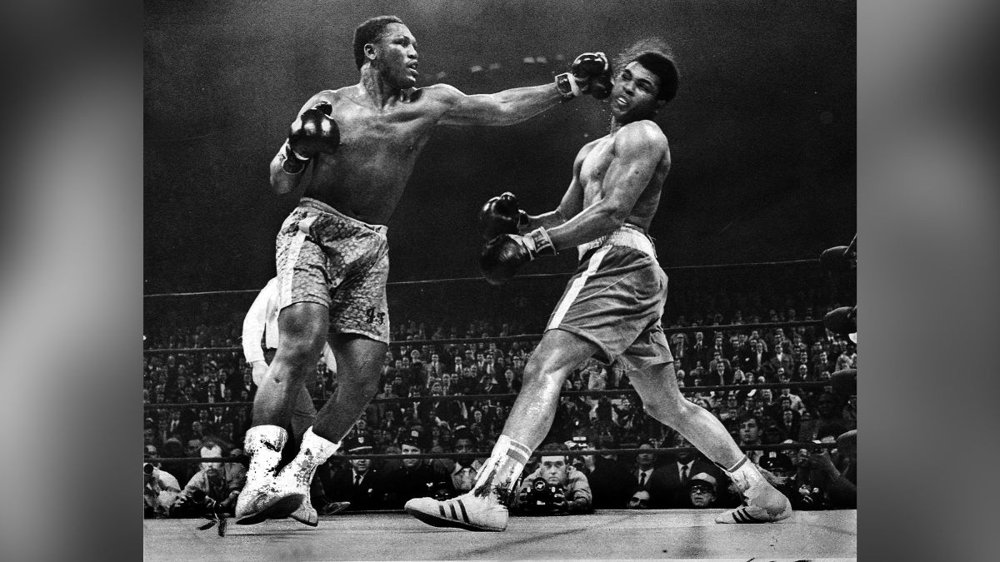
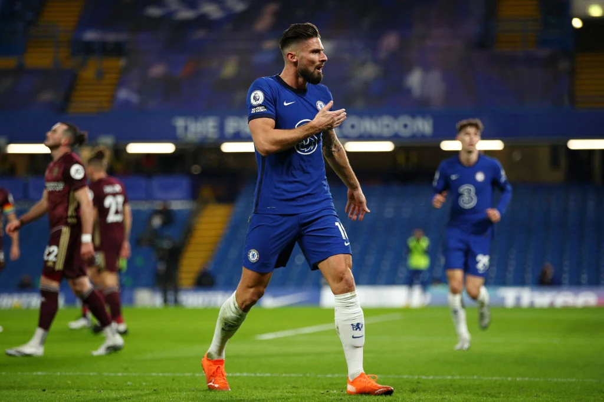
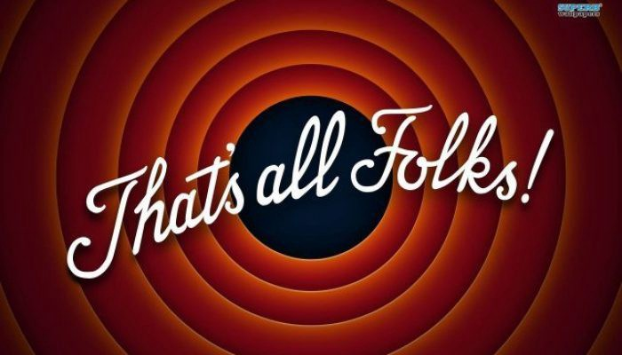

Football is the most popular sport in this day and age. Since time immemorial, football has been adored by many, and the same adoration has been passed on from one generation to another. I for one love football with immense passion, to a point where I'd defy my parents' orders just to watch a game between Manchester United against my all-time favourite, Arsenal (GUNNERS!) The Premier League as of now is one of the most fascinating leagues in the world. It is the real home of football for me. People from all walks of life converge at the prestigious stadiums that England harbours, like the Theatre of Dreams for example. It is the league that has taken most initiative in curbing the plague of racism which football players face, some black players being called monkeys and get banana peels thrown at them. This has affected the industry for quite a while now but due to serious intervention by the United Kingdom Football Association. They penalise hefty fines and take serious action against assaulters, making the English Premier League a safe space for players as well as their agents, who seek to get the best deals for the players they represent. I, 18 years of age, aspire to play in the Premier League some day. In as much as many say that there's no hope for me, I always remind them of one Jamie Vardy and Didier Drogba who are considered late-bloomers, came from rags to riches. Drogba, born in Abidjan, played football in the streets of Ivory Coast till he got into his first club in France, Olympique Marseille, played there for quite a few years and finally broke into top flight aged 26. Being an African, he's my biggest inspiration, and I'm sure to many out here. He shows young boys out here that it is worth the wait, worth the effort, and that prayers do work. This is after him confessing that he's a devout Roman Catholic
The rivalry! The fans! The stadiums! The atmosphere! The crazy tackles! The beautiful goals! The incredible saves! The passion! To die for!! Football is believed to have originated from Brazil, at least that's what my father, grandfather and my late great-grandfather said, God rest his soul. However, it evolved and is now widespread across the world, with every continent and every nation given an equal opportunity to participate in The WORLD CUP, organised by Federation Internationale de Football Association, famously known as FIFA (no Kevin, not the video game haha). Its quite a great watch, it builds the best of memories, however my most iconic moment was where Cesc Fabregas gave an assist to his compatriot Andres 'The Magician' Iniesta who would go ahead to send shock waves across the world by scoring the winning goal in the 2010 World Cup Final. Tears of joy from the Spaniards! Heartbreak for the Dutch! Jubilations rampant in Madrid and Catalunia, just but to name a few of football's most football-oriented cities in Spain. This came after an incredible save by a legend of the game, Iker Casillas who stood up to Arjen Robben's placed shot and tipped it wide. I'll be very honest, there's nothing as wholeseome as seeing a last inute decider, in a Clash Of Titans. It's almost like Muhammed Ali serving a last-minute knockout on his arch-rival Joe Frazier to send him back to the asylum where he came from lol!
Football is a very fascinating sport. Being a sport, there are many philosophies applied in football that can be applied in many other sports. In football, tall masculine players are placed as strikers because of their ability to push around defenders, and score goals. In basketball, the tallest of players are played as Power forwards, as they can easily rebound loose balls as well as dunk the b-ball inside the net. An example being Olivier Girou who plays for AC Milan, and Le Bron James who plays for the Lakers...
Many football coaches around the world put in place hard, aggressive philosophies in football. A team well known for implementing such unorthodox philosophies is a Burnley side coached and managed by one Sean Dyche. In UK they call it a 'Brexit' side, as their style of play isn't as pleasing to the eye, but serves its purpose and wins them games. Considering the low quality players Burnley has, I'd say Sean is a mastermind, an knows his craft far too well. Now that he has been sacked, after nearly a decade of serving the clarets, he's soon going to get a good job somewhere in the top flight of English football, because the entire football community appreciates and loves the guy. "Sean Sean Dychey, our old magician!" the Clarets always chanted this during all their games, it was truly sad to see him leave the club. He for sure has been imprinted in their history books!

1. Make a formal application using our forms which you can get from our site
2. Attach your CV together with your email address and phone number
3. Send all that to our email address kihironicholas10579@gmail.com
4. Wait for our feedback, we will contact you if we deem you fit for our small team
5. Be ready to put in the work, it is a very hands-on experience, therefore you need to be ready for it!

Bye now:)